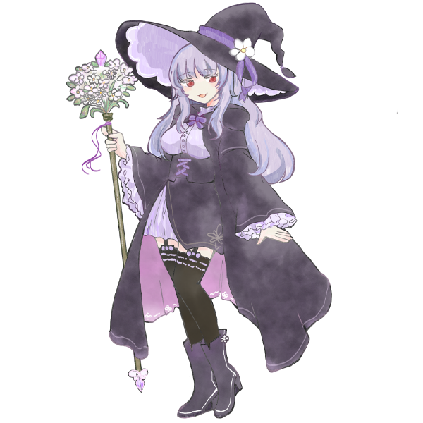

レイジー・ファジーワイズ

age：おばあちゃん俗に魔女と名乗っているタイプの女。
sex：female
height：145cm
weight：むっちり
Favorite：未知のもの
Hate：めんどくさいこと
出演作品：めいきっと！
サボりがちであり、いい加減であり、
めったに本気を出さない。
そして体力が終わっている。
-------------------------------
人里からやや離れた森に住む。いつからいるかは定かではない。
普段は草やら何やら、適当な素材を拾っては、従者に任せている。
ある者いわく、魔女らしさのカケラもないという。
ある者いわく、自然のものを集めるのは上手だという。
ある者いわく、彼女の真の力は自然の摂理に反するのだという。
世話を焼かれれば焼かれるだけ任せるタイプ。
↑までがゲーム内プロフ。
ゆるゆるの合わせとして登録されたキャラクター。
秘術やら神秘やらを餌に従者(クィルくん/よその子/絵を描いてもらった人がPL！)をこき使っている。
実態としては草摘んだり釜で煮込んだりするほうが多いタイプの魔女。
でもゲーム中だと大工とか畜産業をしていた。（儲かるので）
フレーバーとしては知らない世界のインフラを整えるほうが面白いから、とかになってたと思う。
あんまり怠惰じゃないかも……